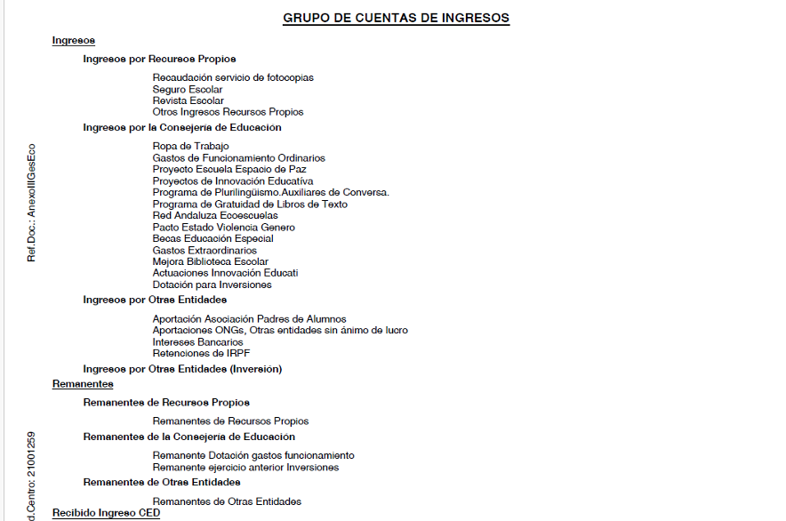
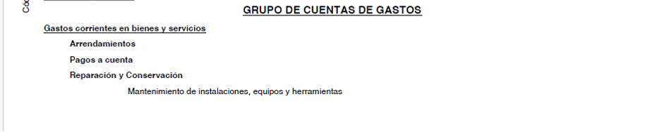
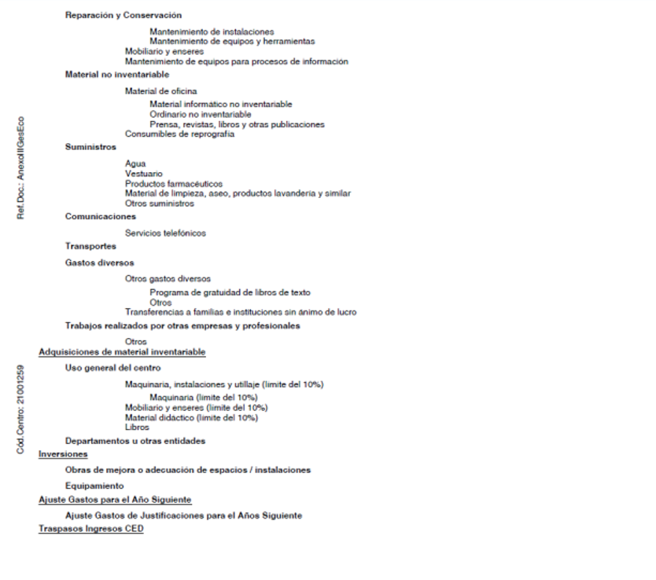

El presupuesto de los centros docentes públicos dependientes de la Consejería de Educación para cada curso escolar estará formado por el estado de ingresos y el de gastos.
Para su elaboración, hay que tomar como base la ORDEN de 10 de mayo de 2006, conjunta de las Consejerías de Economía y Hacienda y de Educación, por la que se dictan instrucciones para la gestión económica de los centros docentes públicos dependientes de la Consejería de Educación y se delegan competencias en los Directores y Directoras de los mismos.
Hay que citar, previamente a su estructuración, el artículo 2 perteneciente al TÍTULO I, acerca del “Estado de Ingresos”:
- El estado de ingresos de cada centro docente estará formado por los créditos que le sean asignados por la Consejería de Educación, por otros fondos procedentes del Estado, Comunidad Autónoma, Diputación, Ayuntamiento o cualquier otro Ente público o privado, por los ingresos derivados de la prestación de servicios, distintos de los gravados por tasas, por los que se obtengan de la venta de material y de mobiliario obsoleto o deteriorado que deberá ser aprobada por el Consejo Escolar y por cualesquiera otros que le pudiera corresponder.
- Para cada curso escolar, la Consejería de Educación, a través de la Dirección General
competente, fijará provisionalmente para cada uno de los centros docentes las cantidades asignadas para gastos de funcionamiento y procederá a su comunicación a los mismos antes del día 30 de noviembre de cada año. Con anterioridad al pago de liquidación del curso escolar, la Consejería de Educación, a través de la Dirección General competente, fijará la cantidad asignada definitivamente a cada centro.
- Asimismo con anterioridad al 31 de enero de cada año, la Consejería de Educación, a través de la Dirección General competente, comunicará a los centros que proceda la cantidad que con destino a inversiones deba recibir el centro para reparaciones, mejora, adecuación y equipamiento de sus instalaciones”.
- El presupuesto de ingresos se confeccionará de acuerdo con el modelo que figura como Anexo I de esta Orden, separando las partidas en tres columnas:
- a) La primera de ellas contendrá la previsión de ingresos propios.
- b) La segunda contendrá la previsión de ingresos como recursos procedentes de la Consejería de Educación, subdividiéndose a su vez en dos columnas, una para anotar los ingresos para gastos de funcionamiento y otra para anotar, en su caso, los ingresos para inversiones.
- c) Cuando proceda, en la tercera columna, se recogerán los fondos procedentes de otras personas o entidades”.
La suma de los importes de las tres columnas se corresponderá con el global total de ingresos.
Con respecto al artículo 3, perteneciente al TÍTULO I, acerca del “Estado de gastos”:
- La confección del estado de gastos con cargo a recursos propios, procedentes de otras entidades o procedentes del presupuesto de la Consejería de Educación para gastos de funcionamiento, se efectuará conforme al modelo que figura como Anexo II de esta Orden, sin más limitaciones que su ajuste a los créditos disponibles, a su distribución entre las cuentas de gasto que sean necesarias para su normal
funcionamiento, según la estructura que figura en el Anexo III de esta Orden, y a la consecución de los objetivos o finalidades para los que han sido librados tales fondos.
- Los centros docentes podrán efectuar adquisiciones de equipos y material inventariable, con cargo a los fondos percibidos con cargo al presupuesto de la Consejería de Educación para gastos de funcionamiento, siempre que concurran las circunstancias siguientes
a) Que queden cubiertas todas las necesidades para el normal funcionamiento del centro.
b) Que dichas adquisiciones tengan un límite máximo que quedará cuantificado en el 10% del crédito anual librado a cada centro con cargo al presupuesto de la Consejería de Educación para gastos de funcionamiento del mismo y se realicen previo informe de la correspondiente Delegación Provincial de la Consejería de Educación sobre la inclusión o no del material de que se trate en la programación anual de adquisición centralizada para ese centro. No estará sujeto a esta limitación el material bibliográfico que el centro adquiera.
c) Que la propuesta de adquisición sea aprobada por el Consejo Escolar del centro.
- La confección del estado de gastos, con cargo a recursos procedentes del presupuesto de la Consejería de Educación para inversiones, se efectuará conforme al modelo que figura como Anexo II de esta Orden, ajustándose a los fondos disponibles, a la finalidad para la que han sido librados tales fondos y a su distribución entre las cuentas de gastos que sean necesarias para su mejor control, según la estructura que figura como Anexo III de esta Orden.
De acuerdo al Artículo 4 sobre “Elaboración y aprobación del presupuesto”:
- El proyecto del presupuesto será elaborado por la Secretaria del centro docente de acuerdo con lo establecido en los artículos 2 y 3 de esta Orden.
- El proyecto de presupuesto del centro será inicialmente elaborado sobre la base de los recursos económicos consolidados recibidos por el mismo en los cursos académicos anteriores. Una vez comunicadas por la Consejería de Educación las cantidades asignadas a cada centro para gastos de funcionamiento y, en su caso, para inversiones, se procederá al ajuste del presupuesto a tales disponibilidades económicas.
- Corresponde al Consejo Escolar el estudio y aprobación del presupuesto, que deberá realizarse dentro de las limitaciones presupuestarias derivadas de la asignación fijada por la Consejería de Educación. La referida aprobación tendrá lugar, para el presupuesto inicialmente elaborado, antes de la finalización del mes de octubre de cada año. La aprobación del ajuste presupuestario que proceda se realizará en el plazo de un mes, contado a partir de la fecha en la que el centro recibe la comunicación de la cantidad asignada por la Consejería de Educación para gastos de funcionamiento y, en su caso, para inversiones.
Según el Artículo 5, “el presupuesto vinculará al centro docente en su cuantía total”,
pudiendo reajustarse, con las mismas formalidades previstas para su aprobación, en función de las necesidades que se produzcan. No obstante, no podrán realizarse reajustes que permitan destinar las cantidades recibidas para inversiones a otros gastos de funcionamiento, ni tampoco aplicar las cantidades correspondientes a estos últimos a gastos de inversión, sin perjuicio de lo establecido en el apartado 2 del artículo 3 de la presente Orden.
Para cubrir los gastos de funcionamiento se elaborará el presupuesto que se distribuirá en los siguientes apartados:


